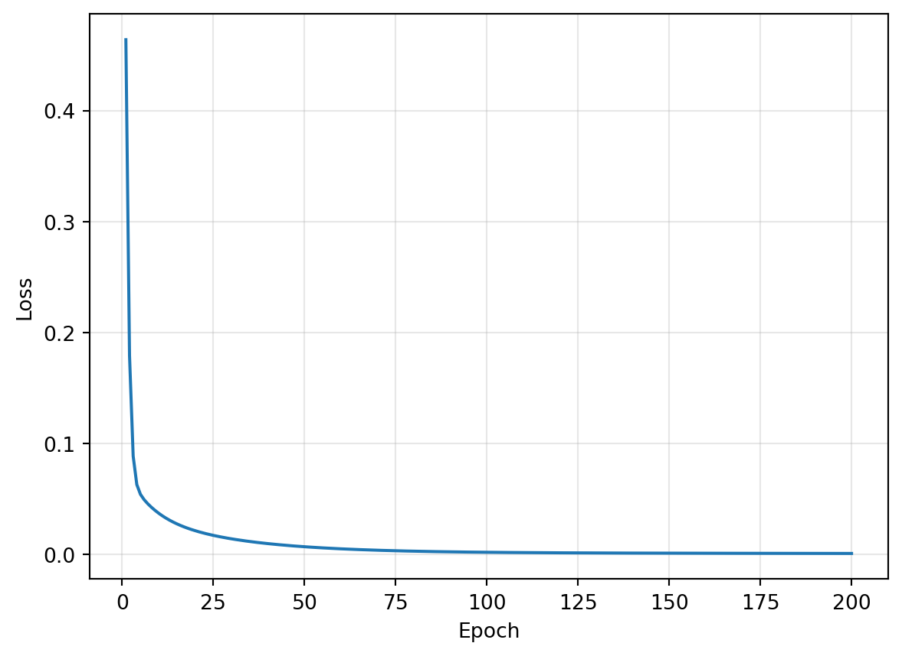

import torch
x = torch.tensor(3.0, requires_grad=True)
print(x)tensor(3., requires_grad=True)
1차식 → 2차식 → 신경망의 예측과 손실 → 기울기 계산 → 가중치 갱신 → 반복 학습 순서로 진행한다.
각 셀을 실행하고 출력값을 확인한 뒤 다음 셀로 넘어간다. 앞의 두 예제에서는 함수값과 기울기를 구분하고, 이후에는 같은 자동미분으로 신경망을 학습시킨다. 중간의 직접 해보기는 먼저 작성한 뒤 노트북 끝의 해설과 비교한다.
대응 이론: Ch03 손실함수와 경사하강법. Colab 기본 CPU 런타임을 사용한다. 입력값을 바꾸어 다시 확인할 때는 해당 예제의 텐서를 만드는 셀부터 차례로 실행한다.
다음 함수가 있다고 하자.
\[f(x)=2x+1\]
\(x=3\)에서 함수값과 기울기를 구해 보자. requires_grad=True는 이 텐서에 대한 기울기를 계산하도록 설정한다.
import torch
x = torch.tensor(3.0, requires_grad=True)
print(x)tensor(3., requires_grad=True)x에는 3이 들어 있다. 이제 이 텐서를 사용해 함수값을 계산한다.
계산한 값을 value에 저장한다. .item()은 값 하나인 텐서를 파이썬 숫자로 꺼낸다.
value = 2 * x + 1
print(value.item())7.0출력은 7이다. \(f(3)=2\times3+1\)을 계산한 결과다.
value.backward()는 방금 계산한 과정을 거슬러 미분한다. 결과는 입력 텐서의 x.grad에 저장된다.
value.backward()
print(x.grad.item())2.0출력은 2다. 함수값 7과는 다른 값이며, \(x\)가 1 증가할 때 함수값이 2 증가한다는 뜻이다.
| 확인한 것 | 코드 | 값 |
|---|---|---|
| 현재 입력 | x |
3 |
| 함수값 | value |
7 |
| 현재 위치의 기울기 | x.grad |
2 |
\(x=5\)일 때 함수값과 기울기를 먼저 예상한다. 아래 셀을 완성해 두 값을 확인한다.
x = torch.tensor(5.0, requires_grad=True)
# ① value에 2 * x + 1 계산
# ② value.backward()로 기울기 계산
# ③ value.item()과 x.grad.item() 출력함수값이 달라졌을 때 기울기도 달라지는가?
이번에는 다음 함수를 사용한다.
\[f(x)=x^2\]
새 텐서로 \(x=3\)을 준비하고, ** 2로 제곱을 계산한다.
x = torch.tensor(3.0, requires_grad=True)
value = x ** 2
print(value.item())9.0함수값은 9다. 이번에도 같은 backward()로 기울기를 구할 수 있다.
value.backward()
print(x.grad.item())6.0출력은 6이다. 도함수 \(f'(x)=2x\)에 3을 넣은 결과와 같다. 파이토치는 도함수를 직접 적지 않아도 텐서로 계산한 과정에서 기울기를 구해 준다.
아래 셀을 완성하고 start를 -3.0, 0.0, 3.0으로 바꾸어 실행한다. 각 위치의 함수값과 기울기를 먼저 예상한다.
start = -3.0
x = torch.tensor(start, requires_grad=True)
# ① value에 x의 제곱 계산
# ② 기울기 계산
# ③ 함수값과 기울기 출력| 입력 | 함수값 | 기울기 |
|---|---|---|
| -3.0 | 직접 기록 | 직접 기록 |
| 0.0 | 직접 기록 | 직접 기록 |
| 3.0 | 직접 기록 | 직접 기록 |
\(x=3\)에서는 기울기가 양수이므로 \(x\)를 조금 줄이면 함수값이 작아진다. \(x=-3\)에서는 기울기가 음수이므로 \(x\)를 조금 늘려야 한다.
이제 이 원리를 학습에 적용한다. 신경망에서는 가중치를 바꿀 때 손실이 어떻게 변하는지 구한다. 먼저 모델의 예측과 정답으로 손실을 만들어 보자.
두 입력 변수로 숫자 하나를 예측하는 작은 회귀 문제를 가정하자. 입력과 정답은 아래에 준비되어 있다. 각 입력 행과 같은 순서의 정답 행이 한 쌍이다.
X = torch.tensor([[0., 0.],
[0., 1.],
[1., 0.],
[1., 1.],
[2., 0.],
[0., 2.]])
y = torch.tensor([[1.0],
[2.0],
[1.5],
[2.5],
[2.0],
[3.0]])
print("입력:", X.shape)
print("정답:", y.shape)입력: torch.Size([6, 2])
정답: torch.Size([6, 1])X는 행이 데이터, 열이 입력 변수다. 데이터 6건에 입력 변수가 2개이므로 (6, 2)다. 정답은 각 데이터에 숫자 하나씩 있으므로 (6, 1)이다.
실습 2처럼 torch.nn의 층을 nn.Sequential로 연결한다. nn.Linear(입력 개수, 출력 개수)의 두 숫자를 다음 구조에 맞춘다.
입력 2개 → Linear(2, 4) → ReLU → Linear(4, 1) → 예측값 1개입력 변수는 2개이고 예측할 값은 하나다. 은닉층의 뉴런 수는 4개로 정한다. 마지막 층의 가중치를 나중에 확인할 수 있도록 output_layer라는 이름을 붙인다.
import torch.nn as nn
torch.manual_seed(42) # 같은 초기 가중치로 결과 비교
hidden_layer = nn.Linear(2, 4)
output_layer = nn.Linear(4, 1)
model = nn.Sequential(
hidden_layer,
nn.ReLU(),
output_layer,
)
print(model)Sequential(
(0): Linear(in_features=2, out_features=4, bias=True)
(1): ReLU()
(2): Linear(in_features=4, out_features=1, bias=True)
)첫 층의 출력 4개가 마지막 층의 입력 4개로 연결되는지 확인한다.
model(X)는 현재 가중치로 여섯 입력의 예측값을 계산한다.
pred = model(X)
print("예측값:")
print(pred)
print("정답:")
print(y)예측값:
tensor([[0.7545],
[0.9853],
[0.9262],
[1.1631],
[1.0886],
[1.2512]], grad_fn=<AddmmBackward0>)
정답:
tensor([[1.0000],
[2.0000],
[1.5000],
[2.5000],
[2.0000],
[3.0000]])처음 두 예측값은 약 0.7545, 0.9853이고 정답은 1.0, 2.0이다. 아직 학습하지 않았으므로 차이가 있다. 이 차이를 숫자로 나타내는 손실을 계산한다.
먼저 각 데이터에서 예측값과 정답의 차이를 구한다.
error = pred - y
print(error)tensor([[-0.2455],
[-1.0147],
[-0.5738],
[-1.3369],
[-0.9114],
[-1.7488]], grad_fn=<SubBackward0>)첫 데이터의 오차는 약 -0.2455다. 예측값이 정답보다 그만큼 작다.
양수와 음수 오차가 서로 상쇄되지 않도록 제곱한다.
squared_error = error ** 2
print(squared_error)tensor([[0.0602],
[1.0296],
[0.3292],
[1.7873],
[0.8307],
[3.0584]], grad_fn=<PowBackward0>)첫 데이터의 제곱오차는 약 0.0602다. 여섯 제곱오차의 평균을 내면 모델의 전체 손실이 된다.
manual_loss = squared_error.mean()
print(manual_loss.item())1.1825798749923706결과는 약 1.1826이다. 이것이 이론에서 배운 평균제곱오차(MSE)다.
\[J=\frac{1}{N}\sum_{i=1}^{N}(\hat{y}_i-y_i)^2\]
여기서 \(N\)은 데이터 수, \(\hat{y}_i\)는 모델의 예측값, \(y_i\)는 정답이다.
nn.MSELoss로 계산nn.MSELoss()로 손실을 계산할 객체를 만들고 criterion이라는 이름을 붙인다. 이후 criterion(예측값, 정답)으로 호출한다.
criterion = nn.MSELoss()
loss = criterion(pred, y)
print(loss.item())1.1825798749923706직접 계산한 값과 같은 약 1.1826이 나온다. 이후 학습에서는 이 부품을 사용한다. 예측값과 정답은 모두 (6, 1)로, 각 행끼리 비교된다.
다음 두 경우의 손실을 예상한 뒤 criterion으로 확인한다.
y를 전달한다.y + 1을 전달한다.# print(criterion(예측값, y).item()) 형태로 두 경우를 확인한다.앞에서는 \(x\)가 바뀔 때 함수값이 어떻게 변하는지 구했다. 이제는 모델의 가중치가 바뀔 때 손실이 어떻게 변하는지 구한다. 입력 X와 정답 y는 학습 데이터로 두고, 모델의 가중치와 편향을 조절한다.
nn.Linear가 만든 가중치와 편향은 기울기를 계산하도록 설정되어 있다. backward()는 모델의 예측에서 손실까지 이어진 계산을 따라 이 값들의 기울기를 구한다.
마지막 층의 가중치는 output_layer.weight에 있다. 네 은닉 출력을 받아 예측값 하나를 만들므로 가중치도 네 개다.
print("갱신 전 출력층 가중치:")
print(output_layer.weight)갱신 전 출력층 가중치:
Parameter containing:
tensor([[ 0.3694, 0.0677, 0.2411, -0.0706]], requires_grad=True)약 0.3694, 0.0677, 0.2411, -0.0706이다. 아래에서 기울기를 계산한 뒤 이 값들이 어떻게 바뀌는지 확인한다.
torch.optim은 가중치 갱신 도구를 모은 모듈이다. 여기서는 SGD로 기울기의 반대 방향으로 이동한다.
optimizer = torch.optim.SGD(model.parameters(), lr=0.05)model.parameters(): 갱신할 모델의 가중치와 편향을 전달한다.lr=0.05: 한 번의 이동 크기를 조절하는 학습률이다.optimizer에는 기울기를 지우는 zero_grad()와 가중치를 갱신하는 step()이 있다. 먼저 기울기를 구해 보자.
파이토치는 기울기를 계산할 때 기존 값에 누적한다. zero_grad()로 이전 기울기를 지운 뒤, 현재 모델로 예측과 손실을 계산한다.
optimizer.zero_grad()
pred = model(X)
loss = criterion(pred, y)
loss.backward()
print("출력층 가중치의 기울기:")
print(output_layer.weight.grad)출력층 가중치의 기울기:
tensor([[-3.0287, -0.4991, -1.2800, -0.8480]])기울기는 약 -3.0287, -0.4991, -1.2800, -0.8480이다. 각 값은 같은 순서의 가중치에 대한 편미분값이다.
이 예제에서는 네 기울기가 모두 음수이므로, 손실을 줄이려면 해당 가중치를 조금 늘리는 방향으로 이동한다. 아직 가중치는 갱신하지 않았다. 다음 셀에서 5.1절의 값이 그대로인지 확인한다.
print(output_layer.weight)Parameter containing:
tensor([[ 0.3694, 0.0677, 0.2411, -0.0706]], requires_grad=True)optimizer.step()은 저장된 기울기와 학습률로 가중치와 편향을 갱신한다.
\[w_{\text{새}}=w-\eta\frac{\partial J}{\partial w}\]
첫 번째 출력층 가중치는 다음과 같이 바뀐다.
\[0.3694-0.05\times(-3.0287)\approx0.5208\]
optimizer.step()
print("갱신 후 출력층 가중치:")
print(output_layer.weight)갱신 후 출력층 가중치:
Parameter containing:
tensor([[ 0.5208, 0.0927, 0.3051, -0.0282]], requires_grad=True)약 0.5208, 0.0927, 0.3051, -0.0282로 바뀐다. 여기서는 출력층을 확인했지만, model.parameters()로 전달한 은닉층과 출력층의 가중치·편향이 모두 갱신된다.
가중치를 바꾼 효과를 보려면 새 가중치로 다시 예측해야 한다.
pred_after = model(X)
loss_after = criterion(pred_after, y)
print("갱신 후 예측값:")
print(pred_after)
print("갱신 전 손실:", loss.item())
print("갱신 후 손실:", loss_after.item())갱신 후 예측값:
tensor([[1.0171],
[1.3936],
[1.2715],
[1.6413],
[1.5224],
[1.8179]], grad_fn=<AddmmBackward0>)
갱신 전 손실: 1.1825798749923706
갱신 후 손실: 0.4638649523258209손실이 약 1.1826 → 0.4639로 줄었다. 첫 두 예측값도 약 1.0171, 1.3936으로 바뀌었다. 각 정답과 비교한다.
방금 실행한 과정을 다음 순서로 짚어 본다.
| 단계 | 코드 | 확인한 것 |
|---|---|---|
| 이전 기울기 초기화 | optimizer.zero_grad() |
새 계산을 준비 |
| 예측 | pred = model(X) |
현재 가중치의 출력 |
| 손실 계산 | loss = criterion(pred, y) |
정답과의 차이 |
| 기울기 계산 | loss.backward() |
각 가중치를 바꿀 방향 |
| 갱신 | optimizer.step() |
실제 가중치 변화 |
한 번 갱신한 모델을 이어서 학습시킨다. 매번 새 가중치로 예측과 손실을 다시 계산하고, 그 위치의 기울기를 구한다.
전체 학습 데이터를 한 번 사용하는 단위를 에폭(epoch)이라고 한다. 여기서는 매번 전체 X, y를 사용하므로 반복 한 번이 한 에폭이다. loss_history에는 각 갱신 직전의 손실을 저장하고, append()로 값을 추가한다.
loss_history = []
for epoch in range(200):
optimizer.zero_grad()
pred = model(X)
loss = criterion(pred, y)
loss.backward()
optimizer.step()
loss_history.append(loss.item())
print("반복 시작 손실:", loss_history[0])
print("반복 종료 후 손실:", criterion(model(X), y).item())반복 시작 손실: 0.4638649523258209
반복 종료 후 손실: 0.00068812002427876손실이 약 0.4639 → 0.00069로 줄어든다. 아래에서는 그 과정을 그림으로 확인한다.
matplotlib.pyplot은 그래프를 그리는 모듈이다. 다음 코드는 그대로 실행한다. 가로축은 학습 횟수, 세로축은 손실이다.
import matplotlib.pyplot as plt
plt.plot(range(1, 201), loss_history)
plt.xlabel("Epoch")
plt.ylabel("Loss")
plt.grid(alpha=0.3)
plt.show()
학습이 끝난 뒤 결과를 확인할 때는 추가 기울기 계산이 필요하지 않다. with torch.no_grad(): 안에서는 미분을 위한 계산 기록 없이 예측한다.
with torch.no_grad():
final_pred = model(X)
print("학습 후 예측값:")
print(final_pred)
print("정답:")
print(y)학습 후 예측값:
tensor([[1.0125],
[1.9828],
[1.5120],
[2.4511],
[2.0188],
[3.0281]])
정답:
tensor([[1.0000],
[2.0000],
[1.5000],
[2.5000],
[2.0000],
[3.0000]])첫 두 예측값은 약 1.0125, 1.9828로 정답 1.0, 2.0에 가까워졌다. 나머지 행도 비교한다.
이번에는 학습에 사용한 데이터로 결과를 확인했다. 다음 실습에서는 데이터를 나누어 새로운 데이터에 대한 성능을 평가한다.
이번에는 같은 구조의 모델을 새로 만들고 직접 학습시킨다. 아래 준비 셀은 그대로 실행한다.
torch.manual_seed(42)
model = nn.Sequential(
nn.Linear(2, 4),
nn.ReLU(),
nn.Linear(4, 1),
)
criterion = nn.MSELoss()
optimizer = torch.optim.SGD(model.parameters(), lr=0.05)
print("새 모델의 손실:", criterion(model(X), y).item())새 모델의 손실: 1.1825798749923706초기 손실은 다시 약 1.1826이다. 다음 반복문에서 주석을 학습 코드 다섯 줄로 바꾼다. 먼저 작성한 뒤 6.1절과 비교한다.
for epoch in range(200):
# ① 이전 기울기 지우기
# ② model에 X를 넣어 pred 계산
# ③ pred와 y로 loss 계산
# ④ 기울기 계산
# ⑤ 가중치 갱신
pass # 다섯 줄을 작성한 뒤 삭제
print("학습 후 손실:", criterion(model(X), y).item())작성 후 다음을 확인한다.
Linear의 숫자를 어떻게 바꿔야 하는가?마지막으로 준비 셀의 은닉층을 6개로 바꾸고, 준비 셀과 작성한 반복문을 차례로 실행한다. 층의 크기를 바꾸어도 같은 학습 코드를 사용할 수 있는지 확인한다.
1차식과 2차식에서는 backward()로 입력에 대한 함수값의 기울기를 구했다. 신경망에서는 같은 방식으로 가중치에 대한 손실의 기울기를 구하고, optimizer.step()으로 모델을 갱신했다.
다음 실습 4에서는 이 학습 코드에 데이터 전처리·분할·미니배치·평가를 연결한다.
x = torch.tensor(5.0, requires_grad=True)
value = 2 * x + 1
value.backward()
print(value.item())
print(x.grad.item())함수값은 11, 기울기는 2다. 1차식 \(2x+1\)은 어느 위치에서도 기울기가 2로 같다.
start = -3.0
x = torch.tensor(start, requires_grad=True)
value = x ** 2
value.backward()
print(value.item())
print(x.grad.item())| 입력 | 함수값 | 기울기 |
|---|---|---|
| -3.0 | 9 | -6 |
| 0.0 | 0 | 0 |
| 3.0 | 9 | 6 |
-3과 3에서는 함수값이 같지만 기울기의 부호가 다르다. 함수값을 줄이려면 서로 반대 방향으로 이동해야 한다.
print(criterion(y, y).item())
print(criterion(y + 1, y).item())첫 경우는 모든 오차가 0이므로 손실도 0이다. 두 번째는 모든 제곱오차가 1이므로 평균인 손실도 1이다.
for epoch in range(200):
optimizer.zero_grad()
pred = model(X)
loss = criterion(pred, y)
loss.backward()
optimizer.step()
print("학습 후 손실:", criterion(model(X), y).item())기울기는 loss.backward()에서 구하고, 가중치는 optimizer.step()에서 바꾼다.
은닉층이 6개라면 nn.Linear(2, 6)과 nn.Linear(6, 1)을 연결한다. 모델과 optimizer를 만드는 준비 셀을 다시 실행하고, 같은 반복문으로 학습시킨다.